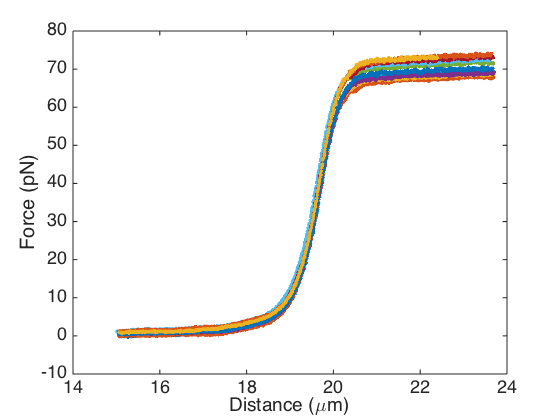

ADVANCED COLLECTION TRICKS
For more experienced MATLAB users, the FdDataCollection object harbors some nice time-saving tricks. In this small tutorial, I'll show you some of the most useful ones.
During this tutorial, I'll assume you know what a function handle is. You'll also need to have some basic familiarity with anonymous functions.
Contents
Loading the sample data
Let's start by creating an FdDataCollection with the sample data:
myCollection = readasciifolder('Doc/SampleData/*.csv', 'HeaderLines', 6);
Reading Doc/SampleData/Sample01.csv... Reading Doc/SampleData/Sample02.csv... Reading Doc/SampleData/Sample03.csv... Reading Doc/SampleData/Sample04.csv... Reading Doc/SampleData/Sample05.csv... Reading Doc/SampleData/Sample06.csv... Reading Doc/SampleData/Sample07.csv... Reading Doc/SampleData/Sample08.csv... Reading Doc/SampleData/Sample09.csv... Reading Doc/SampleData/Sample10.csv...
disp(myCollection);
# name tags -------------------------------------------------------------------------------- (1 ) Sample01 (2 ) Sample02 (3 ) Sample03 (4 ) Sample04 (5 ) Sample05 (6 ) Sample06 (7 ) Sample07 (8 ) Sample08 (9 ) Sample09 (10 ) Sample10
A plot of the sample data:
plotfd(myCollection);
Using Tags
As mentioned in the tutorial, FdData objects can be associated with tags (or 'categories'; you've probably encountered them on the internet before, e.g., Gmail). For the sake of this example, we will add some tags ourselves:
myCollection.items{2}.addTag('looksnice');
myCollection.items{4}.addTag('looksnice');
myCollection.items{5}.addTag('looksnice', 'favorite');
myCollection.items{6}.addTag('favorite');
myCollection.items{10}.addTag('shortOSPlateau');
disp(myCollection);
# name tags -------------------------------------------------------------------------------- (1 ) Sample01 (2 ) Sample02 looksnice (3 ) Sample03 (4 ) Sample04 looksnice (5 ) Sample05 looksnice,favorite (6 ) Sample06 favorite (7 ) Sample07 (8 ) Sample08 (9 ) Sample09 (10 ) Sample10 shortOSPlateau
The table produced by the disp function contains an overview of the tags we just added.
We can now easily retrieve curves from the collection that have a particular tag:
nice = myCollection.getByTag('looksnice');
disp(nice);
# name tags -------------------------------------------------------------------------------- (1 ) Sample02 looksnice (2 ) Sample04 looksnice (3 ) Sample05 looksnice,favorite
What's important to realize here, is that the objects (F,d curves) in our new nice collection, are still the same ones as in the original myCollection. They're just part of multiple FdDataCollections at the same time. (However, a collection cannot contain the same item more than once). We can see the effect of this if we add a tag to one of the items in nice:
disp(nice);
# name tags -------------------------------------------------------------------------------- (1 ) Sample02 looksnice (2 ) Sample04 looksnice (3 ) Sample05 looksnice,favorite
disp(myCollection)
# name tags -------------------------------------------------------------------------------- (1 ) Sample01 (2 ) Sample02 looksnice (3 ) Sample03 (4 ) Sample04 looksnice (5 ) Sample05 looksnice,favorite (6 ) Sample06 favorite (7 ) Sample07 (8 ) Sample08 (9 ) Sample09 (10 ) Sample10 shortOSPlateau
nice.items{2}.addTag('supercalifragilistic');
disp(nice);
# name tags -------------------------------------------------------------------------------- (1 ) Sample02 looksnice (2 ) Sample04 looksnice,supercalifragilistic (3 ) Sample05 looksnice,favorite
disp(myCollection);
# name tags -------------------------------------------------------------------------------- (1 ) Sample01 (2 ) Sample02 looksnice (3 ) Sample03 (4 ) Sample04 looksnice,supercalifragilistic (5 ) Sample05 looksnice,favorite (6 ) Sample06 favorite (7 ) Sample07 (8 ) Sample08 (9 ) Sample09 (10 ) Sample10 shortOSPlateau
As you can see, the F,d curve was updated in both collections, because they're really the same object. If you want to read more about this, see the MATLAB documentation on handle objects.
Leaving that little detour, let's summarize the main point: you can use tags to organize your data. Instead of keeping, for example, different magnesium concentrations in different collections, you can just stuff all the data into one bit FdDataCollection, and then easily retrieve data for a particular concentration using the getByTag function.
Combining Collections
The FdDataCollection also contains a number of functions for combining collections in various ways. Say, for example, that we'd now like to find all F,d curves that have either the looksnice or the favorite tag. How do we do that?
Simple: we get collections for each of those tags separately, and then just 'add them up'. In set theory terms: we take the union.
nice = myCollection.getByTag('looksnice'); favs = myCollection.getByTag('favorite'); niceAndFavs = nice.union(favs); disp(niceAndFavs);
# name tags -------------------------------------------------------------------------------- (1 ) Sample02 looksnice (2 ) Sample04 looksnice,supercalifragilistic (3 ) Sample05 looksnice,favorite (4 ) Sample06 favorite
Or, in a single line:
disp(myCollection.getByTag('looksnice').union(myCollection.getByTag('favorite')));You'll find more functions like this, including intersect, subtract, isequal, and isempty.
Applying Operations to Collections
Finally, the last time-saving trick involves the ability to easily apply operations to all curves in a collection.
Say we'd like to get subsets of the F,d curves: only the data below 30 pN. We could get this by writing a for loop:
dataBelow30pN = FdDataCollection(); for i = 1:myCollection.length dataBelow30pN.add(myCollection.items{i}.subset('f', [-Inf 30])); end
That works perfectly fine, but you might enjoy using this syntax more:
dataBelow30pN = myCollection.map(@(fd) fd.subset('f', [-Inf 30]));
Or, if you'd like to replace all items in myCollection, instead of getting a new collection with subsetted curves:
myCollection.applyToAll(@(fd) fd.subset('f', [-Inf 30]));
To complement these two functions, there are also filter, to get a collection containing only items for which a particular function returns true; and for, for running a function that doesn't return anything on all items in the collection.